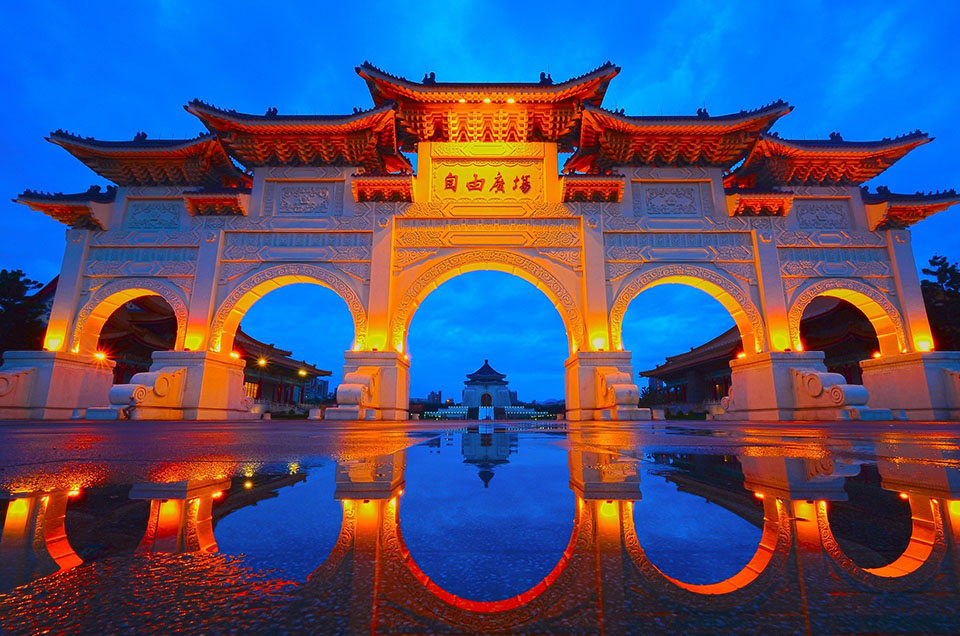
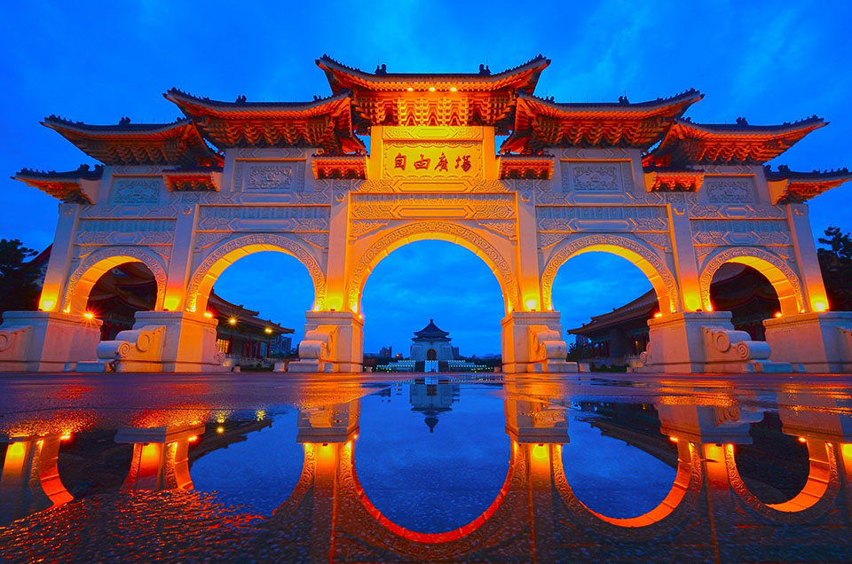

About Taiwan
Although Taiwan may seem like a rather small nation, it’s filled with culture, people, beautiful land, and a long history that young travelers should explore.
As stated in Taiwan Gov, the area of Taiwan is “36,197 square kilometers”, which consists of “23.57 million” people.
Moreover, it is showcased on their website that the highest peak in East Asia is “Taiwan’s Jade Mountain with an elevation of 12,966 feet”.
To add, Taiwan has national parks such as: Kinmen, South Penghu Marine, Dongsha (Tungsha) Atoll, Yangmingshan, Shei-pa, Taroko, Yushan, Taijiang, and Kenting.
While this is an incredible natural feat of Taiwan, the cities of Taiwan are unlike any other.
The cities are full of rich energy with a large background of tradition and culture.
In emphasis, Taiwan Gov describes that, “Taiwan is renowned for its fascinating blend of traditional and modern culture.
To showcase the nation’s history and cultural diversity, museums have been established across Taiwan, including National Palace Museum, National Taiwan Museum, National
Museum of History, National Museum of Prehistory, National Museum of Taiwan Literature and National Taiwan Museum of Fine Arts.
Taiwan also has performance venues nationwide, including National Theater and Concert Hall, National Taichung Theater, National Kaohsiung Center for the Arts (Weiwuying) and
Taiwan Traditional Theatre Center.”
According to Life of Taiwan, the major cities are: “New Taipei, Taoyuan, Taichung, Tainan, and Kaohsiung” which offer large options of entertainment and art facilities make
a great place for young tourists to visit.
There would be a near limitless choice of fun activities to discover and learn about.
Additionally, to introduce a brief history of Taiwan, it is stated that Taiwan was founded in 1912.
According to Britannica, “Prior to the 1600s, Taiwan was self-governing, although there was no central ruling
authority.
It was a colony of the Netherlands for about 40 years in the early to mid-17th century and was subsequently independent again for about two decades.
China gained control there in the late 17th century and ruled Taiwan for some two centuries.
Japan acquired Taiwan in 1895 following the first Sino-Japanese War, and it became a colony. . . Taiwan was returned to Nationalist Chinese control in 1945 following Japan’s defeat
in World War II.
However, in 1949 Chinese communist armies defeated Nationalist forces on the mainland and established the People’s Republic of China there.
The Nationalist government and armies fled to Taiwan, again resulting in the separation of Taiwan from China.” This large portion of information does not conclude half the history
of Taiwan.
However, it vastly demonstrates how deep history within Taiwan has been around time. Whilst additionally, it also covers the basis of how Taiwan became “independent” from China.
However, even if Taiwan is a small independent nation compared to China, Taiwan provides high numbers of exports. To explain more in depth about Taiwan’s exports, Britannica describes
that, “Taiwan has experienced many multiple periods of economic booming and bust. . . Periodically Taiwan’s economy would flourish and decrease. . . Taiwan’s economic boom of the 1960s
was preceded by land reform, which generated growth in agriculture. . . Taiwan began manufacturing and creating technology and computers.” In fact, most of America’s computer chips are
manufactured in Taiwan.
Lastly, Taiwan’s great culture is something young tourists should invest in to explore.
Taiwan’s large cultural overview is immensely full of life, energy, and history.
From Life of Taiwan, Taiwan consists of “a blend of Chinese tradition and modern influences” which spread out to “Austronesian, Japanese, and Western influences”.
Additionally, Taiwan Gov and Britannica would also state that Taiwan is diverse with traditional and modern influences.
Overall, young tourists should definitely visit Taiwan and explore the cultural and open parts of Taiwan.


 
